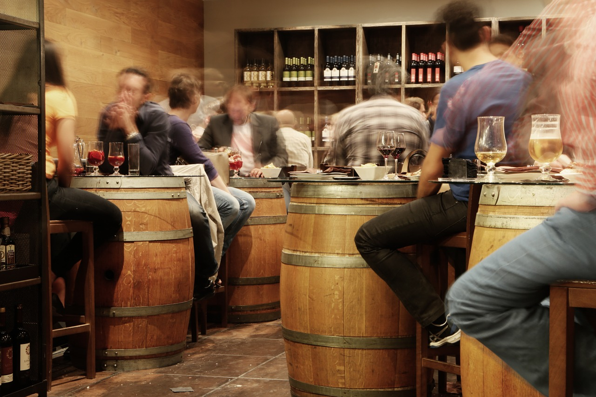

Concerten van BlØf

BLØF werd opgericht in 1992. In de eerste jaren speelden ze als coverband. Het eerste album met eigen
nummers, Naakt onder de hemel, werd in eigen beheer uitgebracht. In 1998 werd BLØF bekend bij het grote
publiek met de single Liefs uit Londen, waarna de populariteit van de band sterk steeg. De single kwam van
het tweede album "Helder". Na het succes van Liefs uit Londen werden live-versies van Aan de kust en Wat zou
je doen van het debuutalbum ook hits. Het derde album Boven bracht de hit Harder dan ik hebben kan. Niets
dan dit en Zaterdag werden ook uitgebracht op single, maar werden minder grote hits.
In 2001 overleed drummer Chris Götte na een verkeersongeluk. In Norman Bonink vond de band een nieuwe
drummer. Bonink speelde eerder in de Frank Boeijen Groep.
Na de dood van Götte bracht de band het album Blauwe ruis uit; Dichterbij dan ooit was de eerste single
die van het album werd getrokken.
Het volgende album was Omarm. Dit album was het eerste Nederlandse album dat als Super audio compact
disc werd uitgebracht. De gelijknamige single Omarm en onder meer de singles Hart tegen hart, Dat wij
dat zijn en Barcelona werden hits.
Lees ook over deze bands: